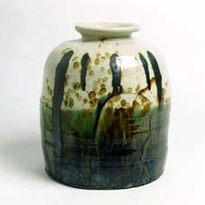

| Ryoji Koie - Ceramic
Rebel
Article by Janet Mansfield
Followers
of the ceramics of the Japanese artist Ryoji Koie could be excused
for wondering what Koie will turn his mind to next. When I first
met Koie in the 1970s he was making pots covered in slip and firing
them with wood that had been dredged from the harbor near Tokoname,
Koie’s home town. These pots had flashes of red and brown
and the sheen one associates with salt-glaze.
Since
then Koie has been involved working in many styles. Significant
are his works of social commentary that refer to Hiroshima, to Nagasaki,
to Chernobyl. These works grace many museum collections and have
serious and passionate impact for those who see them and are aware
of their significance. Koie is also known for his work with unfired
clay, bringing raw earth into the gallery for a series of happenings
and events, radical ones of which, I have heard, caused the traditional
ceramic establishment to raise their eyebrows. When I visited him
in the 1980s at his studio in Gifu, he was cutting stone boulders
in half, firing one half and then realigning both sections together
before writing messages or signatures or dates across the cut sections.
But the workshop was full of pots, woodfired, oribe green glazed
and true fine examples of the potter’s art. And it is the
pots I believe to be the inspiration that has continued to fascinate
Koie’s followers and, possibly, the artist himself. It is
in the pots that Koie shows his rebellious character. While these
pots reflect all the pleasure and value we associate with the Japanese
sense of beauty, we find in them a break with tradition. With these
works he is placed between the pottery tradition and the contemporary
art of the avant-garde. The beauty is there without doubt but we
are also struck by the casual ease of the potter and his spirited
approach.
When
Ryoji Koie accepted my invitation to take part in ClaySculpt Gulgong
1995, I was not sure what to expect. Arriving early he bought several
items of old machinery, such as sewing machines, from the local
townsfolk. Koie has made a number of works using fired metal, particularly
for his Testament series which have appeared throughout his career.
A car accident limited his output during the Gulgong event to a
number of teabowls made with one hand – the other was broken
and confined in a sling. However his interaction with the other
invited masters as well as the participants and his knowledge of
woodfiring added considerably to the event, and his ebullient and
compassionate personality led to many stories.
Born in Tokoname, a traditional ceramic town in Japan, in 1938,
Koie has exhibited his ceramics and contributed to workshops and
conferences in many countries. There are major publications and
catalogues devoted to his ceramics and his work has appeared in
books and magazines. His work was included in A Secret History of
Clay, From Gauguin to Gormley, shown at the Tate, Liverpool, UK,
and can be seen at the National Museum of Modern Art, Tokyo, and
the Metropolitan Museum of Art, New York. In April 2005, his work
will be exhibited at Boutwell Draper Gallery, Sydney.
Ryoji
Koie combines clay and glass in his figurative sculptures, creates
museum installations and uses metal, both found and sought, with
a variety of clays in other works. Known for his spontaneous response
to any situation, he enjoys innovation whether it be in his paintings
or in surface decoration on his pots. In a retrospective of his
work at the Museum of Fine Arts, Gifu, in 1996, works were borrowed
from individuals and institutions from many countries. Titled From
the Earth, To the Earth, works included installations and non-functional
pieces and mention was made of his unique tableware. These, in white
clay with Oribe-style green copper glaze were described as “elegant,
and while at first glance they seem modern and slick, they reveal
delicate touches of traditional craftsmanship, the intriguing innovation
lying precisely in the subtle interplay between the two styles.”
Granted
the Oribe Award, sponsored by the Gifu Prefecture for innovative
activities that link industry and culture, Koie was the 1996 recipient
because of his contribution to the development of creativity and
imagination leading toward the 21st century. The catalogue published
to honor the artist at that time emphasized his international workshops
and exhibition program, focusing on the pottery he made in various
countries. The Australian painter Michael Johnson, writing in the
catalogue for the award said he felt “a sustaining joy to
look upon Ryoji Koie’s works of pottery. The silence of a
singular artist’s contribution is a worthwhile retreat...
Innocence at this point in time: the dream world is relevant and
important.” Recognizing a remarkable aura created from the
cultural past and contemporary world art in Koie’s work, Johnson
wrote: “The modest throwing of clay and glaze takes us to
the inside of his expression, revealed on the outside; a sense of
belonging. The naturalness, the energy of intuitive touch with the
wet earth in his hands, he excavates and reveals the inner shades
of meaning, fusion and flux that fires the imagination.”
Article courtesy of Ceramics
Art & Perception. Dr Janet Mansfield is a potter and editor/publisher
of Ceramics Art and Perception and Ceramics Technical. An exhibition
of recent ceramics by Ryoji Koie will be held at the Boutwell
Draper Gallery, Redfern, Sydney, 13 April – 7 May 2005.
Text & images ©.
More Articles
|